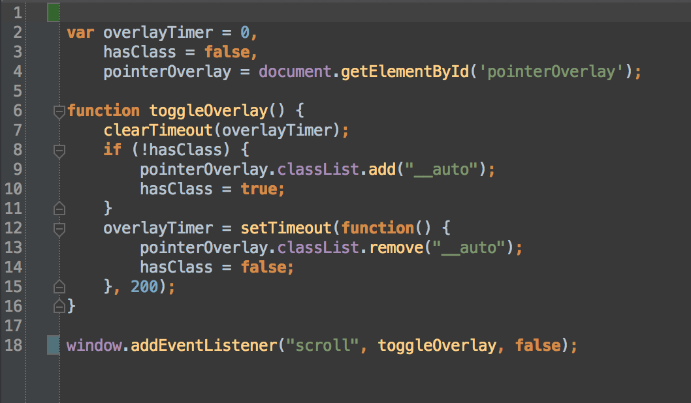

<body style="pointer-events: none/auto">...</body>
#pointerOverlay {
position: fixed;
top: 0; right: 0; left: 0; bottom: 0;
visibility: hidden;
pointer-events: none;
}
#pointerOverlay.__auto {
visibility: visible;
pointer-events: auto;
}
jsperf className vs classList

.hide-feed-cnt > * {
display: none;
}